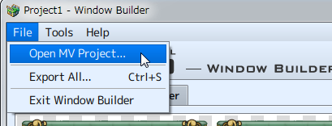
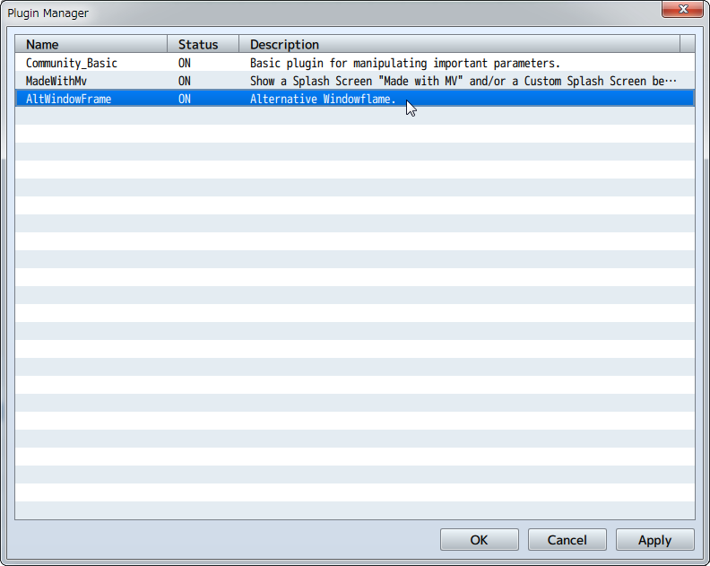

How to Start Creating Windows
Specify MV Project
An MV project needs to be open before creating a window using this software. Click [File] → [Open MV Project], and specify a [Game.rpgproject] file in the MV game folder.

How to Start Creating Windows
- (1) Select a Scene
-
Choose "Dialogue", "Status", "Battle" or "Other" from the Scene Tab.
See [Scene Selection] for how to select a scene. - (2) Select Parts
-
Choose the "Background", "Frame" and "Corner" images from the Parts Tab.
By using Theme Selection, you can change all parts at once.
See [画像の選択] for how to select an image. - (3) Export Window
-
Export the Window created to the selected MV Project.
If any the parts for the [Dialogue], [Status], [Battle], and [Other] scenes are not set, there will be an error during exporting.
There will also be an error exporting if the folder selected does not contain the MV Project file [Game.rpgproject].
See [ウィンドウの書き出し] for how to export the window. - (4) Apply the Window Created in MV
-
Enable [AltWindowFrame] in [Tools] > [Plugin Management] to apply the window created to the MV Project.
* See MV Help for Plugin Management details.